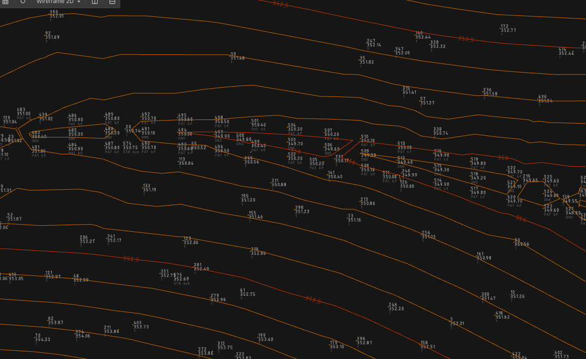
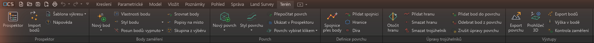
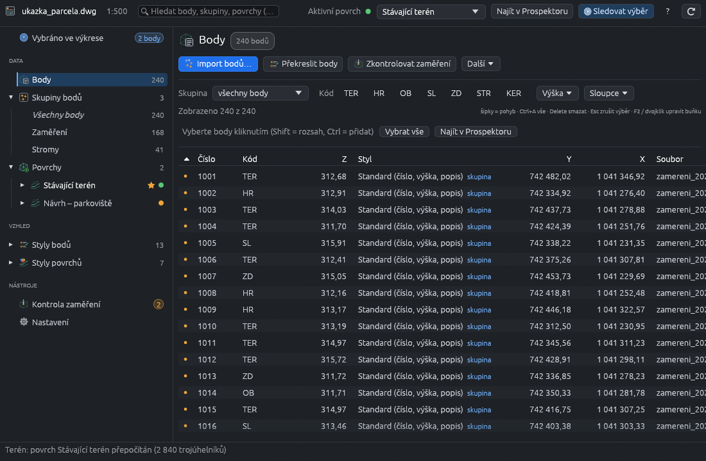
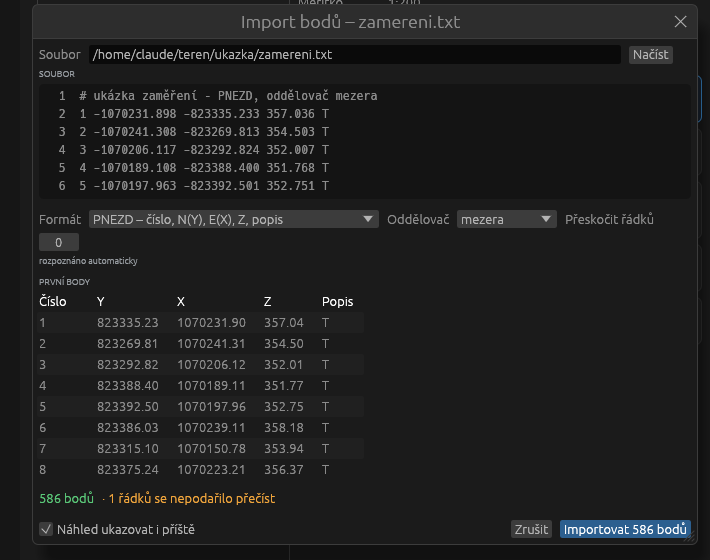
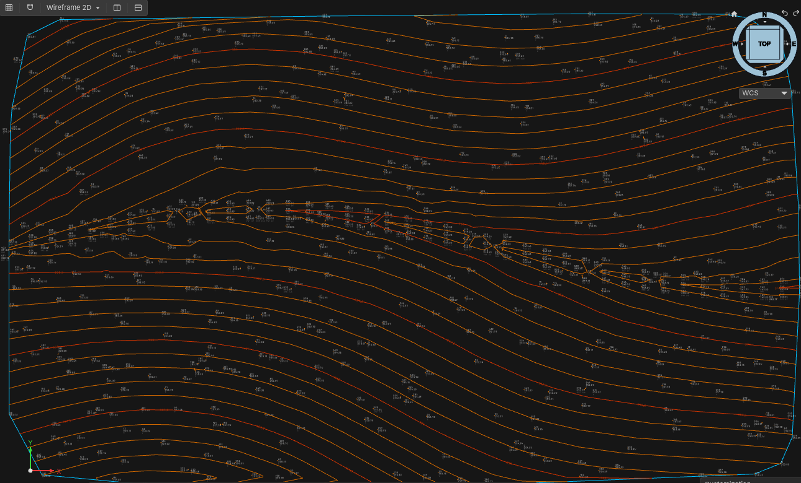
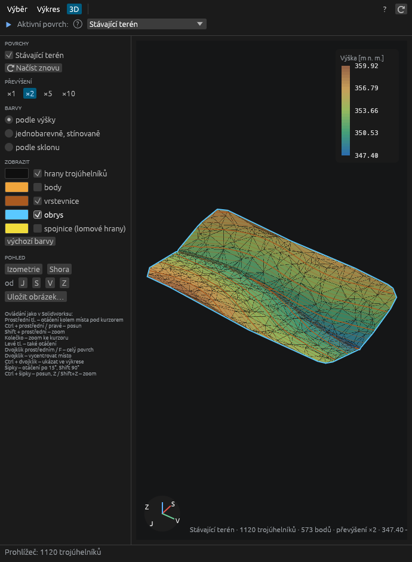

Plugin pro Open CAD Studio: body zaměření, povrchy TIN, spojnice, vrstevnice
Stručný manuál · verze __VERZE__

Terén vytvoří z bodů zaměření digitální model terénu přímo ve výkrese Open CAD Studia:
Vše se ukládá do výkresu (DWG/DXF) – výkres jde předat a dál upravovat i bez pluginu, plugin pak povrch načte znovu.
Správce pluginů: v Open CAD Studiu otevřete Správce pluginů, vyhledejte Terén a klikněte Instalovat. Po restartu se objeví záložka Terén.
Ručně (Windows): stáhněte Teren-windows.zip z vydání na GitHubu, zip rozbalte a spusťte nainstalovat.bat. Plugin se zkopíruje do %APPDATA%\OpenCADStudio\plugins\cz.fluvio.teren.
Každé vydání Terénu je sestavené pro jednu verzi Open CAD Studia – Správce pluginů nabídne to správné; při ruční instalaci zvolte vydání podle tabulky v README (Terén 1.0.2 – 1.0.8 = Open CAD Studio 2026.45).

Záložka Terén na pásu karet
| Skupina | Co obsahuje |
|---|---|
| Prospektor | okno Prospektoru, Import bodů, Šablona výkresu (připravit výkres ze šablony, uložit tento výkres jako šablonu), Nápověda |
| Body zaměření | Nový bod (ruční, na povrchu), Vlastnosti bodu, Styl bodu pro vybrané body, Posun bodů (zapnuto / vypnuto), Srovnat body, Popisy na místo, Skupina z výběru |
| Povrch | Nový povrch (stávající terén, návrh z 3D čar, z naklikaných bodů, průvodce), Styl povrchu, Přepočítat povrch, Ukázat v Prospektoru, Povrch: vybírat klikem / klik projde na body |
| Definice povrchu | Spojnice přes body, Přidat spojnici, Hranice, Díra |
| Úpravy trojúhelníků | Otočit / přidat / smazat hranu, smazat trojúhelník, přidat bod do povrchu / odebrat bod z povrchu, zrušit úpravy povrchu |
| Výstupy | Export povrchu, Prohlížeč 3D, Export bodů, Výška v bodě, Kontrola zaměření |
Prospektor je samostatné okno: vlevo strom, vpravo podrobnosti vybrané položky.

Prospektor – tabulka bodů
Nápověda s postupy a slovníčkem pojmů je v Prospektoru (klávesa F1); otazník ? vedle pojmu ukáže vysvětlivku.

Náhled importu

Povrch s vrstevnicemi
Povrch s automatickým přepočtem se přepočítá sám, když se změní body, spojnice nebo hranice. Jinak se v Prospektoru označí ⚠ zastaralý a stačí kliknout Přepočítat. Každá akce Terénu (import, přepočet, překreslení) jde vrátit jedním krokem Zpět (Ctrl+Z).
Styl určuje značku (křížek, kolečko, strom, šachta…) a popis (číslo, výška, kód). Platí ručně nastavený styl, jinak styl podle kódu (pole pro kódy, např. STR → strom), jinak styl skupiny, jinak Standard. Velikosti jsou v mm na papíře a řídí se měřítkem výkresu (měřítko poznámek ve stavovém řádku, nebo Nastavení › Měřítko).
Vlastní značka: v editoru stylu zvolte vlastní – blok výkresu a vyberte blok. Základní bod bloku = poloha bodu, blok se zvětší na velikost značky, barvu v bloku nastavte „podle bloku“.
Bod, značka a popisy drží pohromadě – klik na kteroukoli část vybere celý bod. Posun bodu: chyťte značku nebo popis a přesuňte je (úchopem nebo příkazem Přesunout) – přesune se celý bod, výška zůstane a povrch se přepočítá. Když v Nastavení zapnete posunutím popisu bodu posunout jen popis, posunutý popis zůstane odsunutý stranou (s vodicí čarou) a bod zůstane na místě; Popisy na místo v tabulce bodů ho vrátí. Kopie značky nebo popisu se smaže. Překrývající se popisy se odsunou s vodicí čarou (vypnete v Nastavení).
Posun bodů (záložka Terén › Body; tlačítko ukazuje stav zapnuto / vypnuto, přepíná se šipkou) zapne vlastní úchopy: na každém bodě se objeví kroužek. Chyťte ho a táhněte – značka i popisy jdou s bodem, po puštění se bod přesune (výška zůstane) jedním krokem Zpět. Dalším klikem na Posun bodů úchopy vypnete (když jsou zapnuté, klik do středu bodu ho nevybere, ale začne posun).
Vlastnosti bodu otevře v doku stejnojmenný panel: po výběru bodu ukáže číslo, výšku, kód a styl. Pole přepište a klikněte Uložit. U více vybraných bodů se uloží jen změněná pole (číslo jen u jednoho bodu). Ve skupině Aktivní povrch panel ukazuje aktivní povrch a jeho stav (aktuální / zastaralý) s tlačítky Přepočítat a Prohlédnout ve 3D – Prospektor nemusí být otevřený.
Kurzorové menu (quad; v Open CAD Studiu se zapíná klávesou F12 nebo polem QUAD ve stavovém řádku) má u bodů a povrchů záložku Terén: vlastnosti bodu, posun bodů, přidat bod do povrchu, přepočítat povrch, Prospektor.
Nový bod › Ruční bod: klikněte do výkresu nebo zadejte x,y; otevře se okno s výškou (návrh z povrchu nebo z předchozího bodu) a kódem. Bod na povrchu vezme výšku z aktivního povrchu. Výšku, číslo a kód existujícího bodu změníte přímo v tabulce bodů: dvojklik na buňku, přepsat, Enter uloží a skočí na další bod (Esc zruší). F2 upraví buňku vybraného bodu. Více vybraným bodům najednou nastavíte nebo přičtete výšku, kód, styl, skupinu nebo je přečíslujete z lišty nad tabulkou; filtry nad ní vyberou body podle skupiny, kódu a výšky.
Skupina vybírá body podle pravidel (kód, čísla, soubor importu), s výjimkami a ručně přidanými / odebranými body. Náhled barevně ukazuje, které body do skupiny patří. Povrch se skládá ze skupin – změna skupiny povrch přepočítá nebo označí jako zastaralý.
Prospektor › Kontrola zaměření najde body, jejichž výška výrazně vybočuje z okolí (překlep, bod na autě). Podezřelé body označí kroužkem na hladině TER_KONTROLA; jedním kliknutím je vynecháte z povrchu.
Povrch tvoří: skupiny bodů, objekty výkresu (body, bloky, čáry, 3D plochy – např. výkres od geodeta), spojnice, hranice a díry a ruční úpravy. Vše je v Prospektoru ve stromu pod povrchem a na jeho kartě na záložce Zdroje; každou položku jde vypnout, ukázat nebo odebrat.
Aktivní povrch (horní řádek Prospektoru, dvojklik ve stromu, ★ ve stromu) používají nástroje Úpravy trojúhelníků, Výška v bodě a Bod na povrchu.
Styl povrchu určuje, co se kreslí: trojúhelníky, vrstevnice (vedlejší / hlavní, barvy, popisy), obrys, šipky spádu. Styly upravíte v Prospektoru pod Styly; vestavěný styl jde kdykoli vrátit k původnímu nastavení.
Povrch je ve výkrese blok na vlastních hladinách; v Nastavení lze zapnout Povrch nejde vybrat kliknutím, aby klik prošel na body pod ním.

Barvy podle výšky, sklonu nebo jednobarevně, převýšení ×1 až ×10, vrstevnice, obrys, spojnice, body a hrany trojúhelníků – barvu každého prvku zvolíte čtverečkem vedle něj. Ovládání jako v SolidWorksu: prostřední tlačítko otáčí kolem místa pod kurzorem, Ctrl + prostřední posouvá, kolečko zoomuje, F ukáže celý povrch. Uložit obrázek uloží PNG do složky výkresu.
Prospektor › Nastavení je rozdělené do kategorií: Obecné (jazyk – projeví se po restartu Open CAD Studia, sledování výběru), Výkres a měřítko (měřítko, odsazení popisů, šablona), Body a import, Povrchy (vyloučené kódy nového povrchu, přichycení spojnic, výběr kliknutím), Kontrola zaměření (práh) a Okno Prospektoru (co ukázat po otevření, vždy navrchu, úzké / široké okno). Vysvětlivky ukáže tooltip.
Šablona výkresu: Uložit tento výkres jako šablonu uloží styly a měřítko do profilu uživatele; Připravit výkres (pás karet) pak v novém výkrese jedním kliknutím připraví hladiny, značky bodů, měřítko a styly.
| Problém | Řešení |
|---|---|
| Body se po importu neobjevily | Zkontrolujte v náhledu formát a pořadí sloupců (S-JTSK: Y a X kladné ve formátu PYXZD). |
| Povrch má dlouhé trojúhelníky přes okraj | Nastavte Max. délku hrany nebo přidejte hranici. |
| Trojúhelníky kříží hranu svahu | Přidejte spojnici (Spojnice přes body). |
| Stromy jsou v terénu | Kód STR je v Vyloučit kódy povrchu; doplňte další kódy, které do terénu nepatří. |
| Povrch ukazuje ⚠ zastaralý | Klikněte Přepočítat, nebo zapněte automatický přepočet. |
| Popisy jsou příliš velké / malé | Změňte měřítko (stavový řádek nebo Nastavení) – popisy se překreslí. |
Terén · licence GPL-3.0 · zdrojový kód a hlášení chyb: GitHub